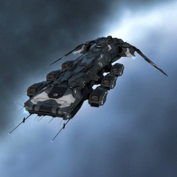

Cormorant

Тип корабля: Эсминец
Государство/Организация: Caldari
Примерная стоимость: 985.000 ISK
Описание
«Корморант» — единственный производимый Государством Калдари корабль, разработанный сторонней компанией. Конечно же, ходят самые разнообразные слухи, но личность дизайнера хранится в строжайшем секрете во внутренних кругах государства.
Характеристики
Корпус
Запас прочности корпуса: 700 ед.
Вместимость грузового отсека: 425 м^3
Объем отсека для дронов: -
Пропускная способность канала телеуправления: -
Масса: 1.700.000 кг
Занимает объем: 52.000,0 м^3 (5.000,0 м^3 в разобранном виде)
Влияние инертности конструкции: 2,78x
Сопротивление корпуса ЭМ-урону: 33 %
Сопротивление корпуса термальному урону: 33 %
Сопротивление корпуса кинетическому урону: 33 %
Сопротивление корпуса фугасному урону: 33 %
Броня
Запас прочности брони: 700 ед.
Сопротивление брони ЭМ-урону: 50 %
Сопротивление брони термальному урону: 45 %
Сопротивление брони кинетическому урону: 25 %
Сопротивление брони фугасному урону: 10 %
Щит
Запас прочности щита: 900 ед.
Влияние на время регенерации щитов: 10 минут и 25 секунд
Сопротивление щита ЭМ-урону: 0 %
Сопротивление щита термальному урону: 20 %
Сопротивление щита кинетическому урону: 40 %
Сопротивление щита фугасному урону: 50 %
Сопротивление средствам РЭП
Сопротивление накопителя нейтрализирующему воздействию: 0 %
Сопротивление воздействию генератору стазис-поля: 0 %
Сопротивление воздействию помех на наводку вооружения: 0 %
Накопитель энергии
Емкость накопителя: 600,0 ГДж
Время востановления заряда: 5 минут и 19 секунд
Целеуказания
Максимальная дальность захвата цели: 36 км
Максимальное количество захваченных целей: 7
Радиус сигнатуры: 65 м
Разрешающая способность систем захвата цели: 475 мм
Эффективность радарной системы: -
Эффективность магнитнометрической системы: -
Эффективность гравиметрической системы: 12 ед.
Эффективность ладарной системы: -
Двигательная установка
Максимальная скорость: 250 м/с
Скорость в варп-режиме: 4,5 а.е./с.
Служба оснащения
Мощность ЦПУ: 200,0 Тф
Мощность реактора: 68 МВт
Калибровка: 400 ед.
Точки монтажа орудийных установок: 7
Точки монтажа пусковых установок: 1
Разъемы большой мощности: 8
Разъемы средней мощности: 3
Разъемы малой мощности: 2
Разъемы под установку тюнинг-модулей: 3